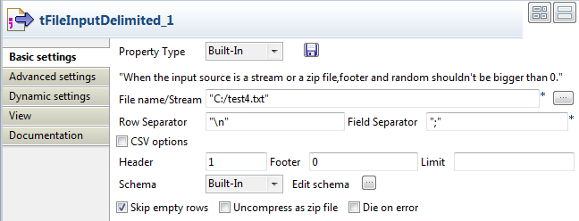

Famille du composant | Processing/Fields | |
Fonction | Le composant tExtractRegexFields génère des colonnes multiples à partir d’une colonne donnée en utilisant des correspondances regex. | |
Objectif | Le tExtractRegexFields permet d’utiliser des expressions régulières pour extraire les données selon un modèle. | |
Basic settings | Field to split | Sélectionnez un champ entrant à diviser dans la liste Field to split. |
| Regex | Renseignez l’expression régulière en fonction du langage de programmation que vous utilisez. |
| Schema et Edit Schema |
Un schéma est une description de lignes, il définit le nombre de champs qui sont traités et passés au composant suivant. Si vous utilisez Talend Open Studio for Big Data, seul le mode Built-in est disponible. Cliquez sur Edit Schema pour modifier le schéma. Notez que si vous effectuez des modifications, le schéma devient automatiquement built-in. Cliquez sur Sync columns pour récupérer le schéma du composant précédent. AvertissementVérifiez que le schéma de sortie ne contient pas de colonne ayant le même nom que la colonne d'entrée à diviser. Sinon, l'expression régulière ne fonctionnera pas comme supposé. |
|
| Built-in : Le schéma sera créé et conservé pour ce composant seulement. Voir également le Guide utilisateur de Talend Open Studio. |
|
|
|
Repository : Le schéma existe déjà et est stocké dans le Repository. Ainsi, il peut être réutilisé dans divers projets et Jobs. Voir également le Guide utilisateur de Talend Open Studio. |
Advanced settings | Die on error | Cette case est cochée par défaut et stoppe le Job en cas d’erreur. Décochez cette case pour terminer le traitement avec les lignes sans erreurs, et ignorer les lignes en erreur. Vous pouvez récupérer les lignes en erreur, si vous le souhaitez. Pour cela, utilisez un lien Row > Reject. |
| Check each row structure against schema | Cochez cette case pour synchroniser chaque ligne avec le schéma d’entrée. |
| tStatCatcher Statistics | Cochez cette case pour collecter les données de log au niveau du Job, ainsi qu’au niveau de chaque composant. |
Utilisation | Ce composant traite des flux de données, il nécessite donc un composant d’entrée et un composant de sortie. Il permet d'extraire des données d'un champ délimité à l'aide d'un lien Row > Main, et permet de créer un flux de rejet avec un lien Row > Reject, filtrant les données dont le type ne correspond pas au type défini. | |
Ce scénario décrit un Job à trois composants dans lequel le tExtractRegexFields est utilisé pour définir une expression régulière correspondant à l’une des colonnes des données d’entrée. Dans ce scénario, il s’agit de la colonne email. Le composant tExtractRegexFields est également utilisé pour trouver les correspondances avec ladite expression régulière. Cette expression comprend des identifieurs de champ permettant de séparer le nom d’utilisateur, le nom de domaine ainsi que le nom du domaine de premier niveau pour chaque adresse e-mail. Si l’adresse e-mail est valide, ces trois parties sont extraites et affichées sur la console dans trois colonnes différentes. Les données des deux autres colonnes d’entrée, id et age, sont également extraites puis redirigées.

A partir de la Palette, cliquez-déposez les composants suivants dans l’espace graphique : le tFileInputDelimited, le tExtractRegexFields et le tLogRow.
Connectez le tFileInputDelimited au tExtractRegexFields à l'aide d'un lien Row > Main, puis reliez le tExtractRegexFields au tLogRow via un autre lien Row > Main.
Dans l’espace graphique, double-cliquez sur le composant tFileInputDelimited pour définir sa configuration de base.
Cliquez sur le bouton [...] à côté du champ File Name/Streampour définir le chemin d’accès au fichier d’entrée.
Dans ce scénario, le fichier d’entrée utilisé est test4. Il s’agit d’un fichier texte comportant trois colonnes : id, email et age.
id;email;age 1;anna@yahoo.net;24 2;diana@sohu.com;31 3;fiona@gmail.org;20
Pour plus d'informations, consultez la section intitulée « tFileInputDelimited ».
Cliquez sur le bouton [...] du champ Edit schema pour définir la structure des données du fichier d’entrée.
Dans l’espace graphique, double-cliquez sur le composant tExtractRegexFields pour définir sa configuration de base (Basic settings).

A partir de la liste déroulante Field to split, sélectionnez la colonne à séparer, à savoir email dans ce scénario.
Dans le panneau Regex, renseignez l’expression régulière à utiliser pour effectuer la correspondance. Dans ce scénario, une expression régulière
"([a-z]*)@([a-z]*).([a-z]*)"est utilisée pour mettre en correspondance les trois parties d'une adresse e-mail : utilisateur, domaine et domaine de premier niveau.Pour plus d'informations concernant les expressions régulières consultez http://fr.wikipedia.org/wiki/Expression_rationnelle.
Cliquez sur Edit schema pour ouvrir la boîte de dialogue [Schema of tExtractRegexFields], cliquez cinq fois sur le bouton [+] pour ajouter cinq colonnes au schéma.
Dans ce scénario, vous allez diviser la colonne d'entrée email en trois colonnes dans le flux de sortie, name, domain et tld. Les deux autres colonnes d'entrée seront extraites telles qu'elles sont.

Double-cliquez sur le composant tLogRow pour ouvrir sa vue Component.
Dans la zone Mode, sélectionnez Table (print values in cells of a table).
Appuyez sur les touches Ctrl+S pour enregistrer votre Job.
Appuyez sur F6 pour l’exécuter, ou cliquez sur l'onglet Run, dans la vue Run.
Le composant tExtractRegexFields effectue une correspondance entre toutes les adresse e-mail données et l’expression régulière définie, puis extrait le nom d’utilisateur, le domaine et le domaine de premier niveau, qu’il affiche sur la console dans trois colonnes séparées. Les deux autres colonnes, id et age, sont extraites telles quelles.